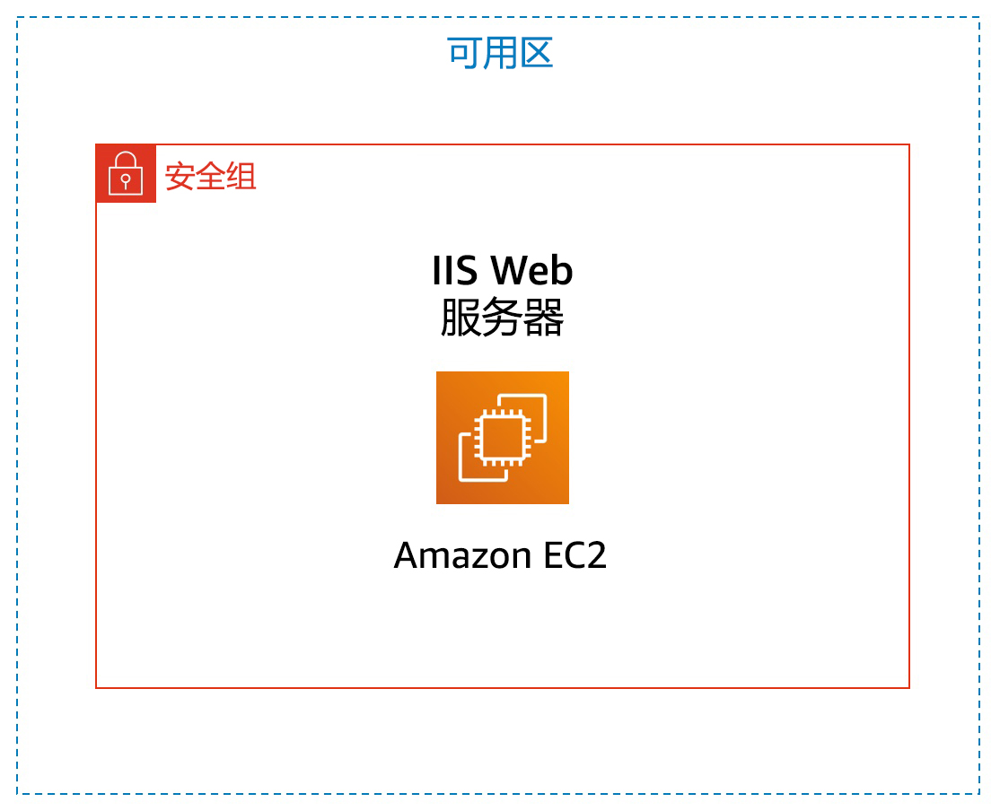
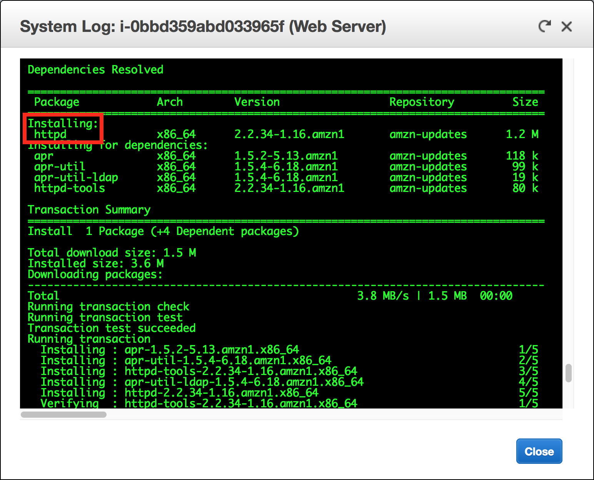
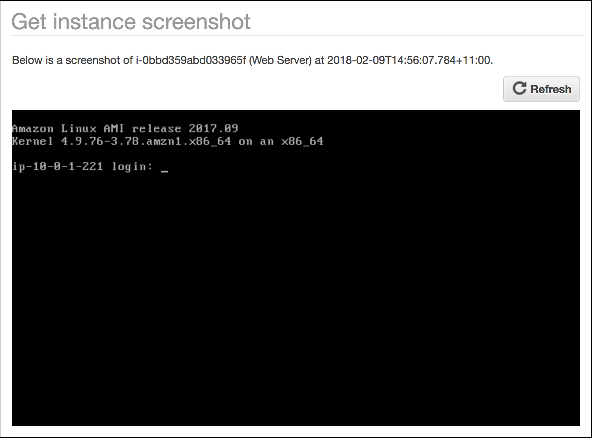

版本 1.1.7 (spl200)

本实验概述了如何启动、管理和监控 Amazon EC2 实例以及调整其大小。
Amazon Elastic Compute Cloud (Amazon EC2) 是一种 Web 服务，可在提供大小可调的云端计算容量。该服务旨在让开发人员更轻松地进行 Web 规模的云计算。
Amazon EC2 的 Web 服务界面非常简单，您可以在此界面上轻松获取和配置容量。使用该服务，您可以完全控制您的计算资源，并可以在经过验证的 Amazon 计算环境中运行。Amazon EC2 将获取并启动新服务器实例所需要的时间缩短至几分钟，这样一来，在您的计算要求发生变化时，您便可以快速扩展或缩减计算容量。
Amazon EC2 按您实际使用的容量收费，改变了计算的成本结算方式。Amazon EC2 还为开发人员提供了相关工具来创建能够迅速从故障中恢复的应用程序并避免常见故障。
本实验结束时，您将能够：
完成本实验大约需要 35 分钟。
在这些说明的顶部，单击 Start Lab（启动实验）启动您的实验。
“Start Lab”（启动实验）面板随即会打开，其中显示了实验状态。
请耐心等待，直到您看到“Lab status: ready”（实验状态：就绪）消息，然后单击 X 关闭 Start Lab（启动实验）面板。
在这些说明的顶部，单击 AWS
在您执行此操作后，AWS 管理控制台将会在一个新的浏览器标签页中打开。您将自动登录系统。
提示：如果未打开新的浏览器选项卡，则您的浏览器顶部通常会出现一个横幅或图标，表明您的浏览器阻止该网站打开弹出窗口。单击横幅或图标，然后选择 Allow pop ups（允许弹出窗口）。
排列 AWS 管理控制台选项卡，使其与这些说明一起显示。理想情况下，您将能够同时看到这两个浏览器选项卡，以便更轻松地执行实验步骤。
在此任务中，您将启动带有终止保护的 Amazon EC2 实例。终止保护可以防止您意外终止 EC2 实例。您将使用用户数据脚本部署实例，该脚本使您能够部署简单的 Web 服务器。
Amazon 系统映像 (AMI) 提供启动实例（云中的虚拟服务器）所需的信息。AMI 包括：
Quick Start（快速启动）列表包含最常用的 AMI。您也可以创建自己的 AMI 或从 AWS Marketplace 选择一个 AMI。AWS Marketplace 是一个在线商店，您可以在其中销售或购买在 AWS 上运行的软件。
Amazon EC2 提供了多种经过优化的实例类型，适合不同的使用案例。实例类型包括由 CPU、内存、存储和网络容量组成的不同组合，使您能够灵活地为应用程序选择适当的资源组合。每种实例类型都包含一个或多个实例大小，使您能够根据目标工作负载的需求扩展资源。
默认情况下，您要使用的 t2.micro 实例应处于选中状态。此实例类型具有 1 个虚拟 CPU 和 1GiB 内存。注意：本实验可能会限制您使用其他实例类型。
您可以在此页面配置实例以满足您的需求。这包括联网和监控设置。
Network（网络）指明您希望在哪个 Virtual Private Cloud (VPC) 中启动实例。您可以拥有多个网络，例如分别用于开发、测试和生产的不同网络。
对于 Network（网络），选择 Lab VPC。
Lab VPC 是在实验的设置过程中使用 AWS CloudFormation 模板创建的。此 VPC 包含在两个不同的可用区中的两个公有子网。
对于 Enable termination protection（启用终止保护），请选择 Protect against accidental termination（防止意外终止）。
当不再需要某个 Amazon EC2 实例时，可以将其终止，这意味着该实例已停止并释放了其资源。实例一旦终止就无法再次启动。如果要防止实例意外终止，可以为实例启用终止保护，以防止实例终止。
此时将显示 User data（用户数据）字段。
当您启动实例时，可以将用户数据传递到实例，用户数据可用于执行常见的自动配置任务甚至在实例启动后运行脚本。
您的实例运行的是 Amazon Linux，因此需要提供一个将在实例启动时运行的 Shell 脚本。
复制以下命令并将其粘贴到 User data（用户数据）字段中：
#!/bin/bashyum -y install httpdsystemctl enable httpdsystemctl start httpdecho '<html><h1>Hello From Your Web Server!</h1></html>' > /var/www/html/index.html该脚本将执行以下操作：
Amazon EC2 将数据存储在名为 Elastic Block Store 的网络挂载的虚拟磁盘上。
您将使用默认的 8GiB 磁盘卷启动 Amazon EC2 实例。该卷将是您的根卷（也称为“启动卷”）。
标签让您能够按各种标准（例如用途、拥有者或环境）对 AWS 资源进行分类。这在您具有许多同类资源时会很有用 — 您可以根据分配给资源的标签快速识别特定资源。每个标签都包含您定义的一个键和一个值。
NameWeb Server
安全组将起到虚拟防火墙的作用，用于控制一个或多个实例的流量。在您启动某个实例时，会将一个或多个安全组与该实例相关联。您可以向每个安全组添加规则，以允许进出关联实例的流量。您可以随时修改安全组的规则；新规则将自动应用于与该安全组关联的所有实例。
Web Server security groupSecurity group for my web server在本实验中，您无法使用 SSH 登录您的实例。删除 SSH 访问权限将提高实例的安全性。
“Review”（核查）页面将显示您要启动的实例的配置。
此时将显示 Select an existing key pair or create a new key pair（选择现有密钥对或创建新密钥对）窗口。
Amazon EC2 使用公有密钥加密法来加密和解密登录信息。要登录您的实例，您必须创建密钥对，并在启动该实例时指定密钥对名称，然后在连接到该实例时提供私有密钥。
在本实验中，您无需登录实例，因此不需要密钥对。
此时，您的实例将会启动。
该实例的状态将显示为 pending（等待中），这表示它正在启动。随后，它的状态将变为 running（正在运行），这表示该实例已开始启动。一小段时间之后，您就可以访问该实例了。
该实例将获得一个公有 DNS 名称，您可使用此名称通过互联网与实例通信。
您的 Web Server（Web 服务器）必须处于选中状态。Description（描述）选项卡显示有关您的实例的详细信息。
要在 Description（描述）选项卡中查看更多信息，请向上拖动窗口分隔线。
查看 Description（描述）选项卡中显示的信息。其中包括有关实例类型、安全设置和网络设置的信息。
恭喜！您已成功启动自己的第一个 Amazon EC2 实例。
监控是保持 Amazon Elastic Compute Cloud (Amazon EC2) 实例和 AWS 解决方案可靠性、可用性和性能的重要一环。
使用实例状态监控，您可以快速确定 Amazon EC2 是否已经检测到可能阻止您的实例运行应用程序的任何问题。Amazon EC2 将自动对所有正在运行的 EC2 实例执行检查，以识别硬件和软件问题。
请注意，本实验中的实例已通过 System reachability（系统可访问性）和 Instance reachability（实例可访问性）检查。
此选项卡显示您的实例的 Amazon CloudWatch 指标。目前，此选项卡显示的指标并不多，因为实例是最近才启动的。
您可以单击图表来查看放大图。
Amazon EC2 将指标发送到用于您的 EC2 实例的 Amazon CloudWatch。默认情况下，基本监控（5 分钟）处于启用状态。您可以启用详细监控（1 分钟）。
系统日志将显示实例的控制台输出，这是一种很有价值的工具，可用于问题诊断。它尤其适合用于排查内核问题和服务配置问题，它们可能会导致实例在 SSH 后台程序启动前终止或变得不可访问。如果您没有看到系统日志，请等待几分钟，然后重试。

系统此时会向您展示当屏幕连接到 Amazon EC2 实例控制台时，该控制台的外观。

如果您无法通过 SSH 或 RDP 访问您的实例，可以截取实例的屏幕截图，以图像形式查看。这可以让您了解实例的状态，更快地进行故障排查。
恭喜！您已探索了多种监控实例的方法。
启动 EC2 实例时，您提供了一个脚本，该脚本安装了 Web 服务器并创建了一个简单的网页。在此任务中，您将从该 Web 服务器访问内容。
问题：您能否访问您的 Web 服务器？为什么无法访问？
您目前无法访问您的网络服务器，因为安全组不允许端口 80 上的入站流量，该端口用于 HTTP Web 请求。这演示了如何将安全组用作防火墙来限制允许进出实例的网络流量。
要解决此问题，您现在应更新安全组以允许端口 80 上的 Web 流量。
此安全组当前没有规则。
您应该会看到以下消息：Hello From Your Web Server!（Web 服务器向您问好！）
恭喜！您已成功修改安全组以允许 HTTP 流量进入您的 Amazon EC2 实例。
随着您的需求变化，您可能会发现您的实例被过度使用（过小）或未得到充分使用（过大）。如果是这样，您可以更改实例类型。例如，如果 t2.micro 实例对于其工作负载来说过小，您可将其更改为 m5.medium 实例。同样，您可以更改磁盘的大小。
在调整实例大小之前，您必须将其停止。
当您停止实例时，它会关闭。已停止的 EC2 实例不会产生任何费用，但 Amazon EBS 卷仍会产生存储费用。
Web Server 应已经选中。
您的实例将执行正常的关机操作，然后将停止运行。
当您再次启动该实例时，它将是 t2.small，其内存是 t2.micro 实例的两倍。注意：本实验可能会限制您使用其他实例类型。
当前磁盘卷的大小为 8GiB。现在，您将增加该磁盘的大小。
10 注意：本实验可能会限制您创建较大的 Amazon EBS 卷。现在，您将再次启动该实例，该实例现在将具有更多的内存和更多的磁盘空间。
恭喜！您已成功调整 Amazon EC2 实例的大小。在此任务中，您已将实例类型从 t2.micro _ 更改为 _t2.small。您还将根磁盘卷的大小从 8GiB 修改为了 10GiB。
Amazon EC2 提供了不同的资源供您使用。这些资源包括映像、实例、卷和快照。在您创建 AWS 账户时，应遵循这些资源在每个区域的默认限制。
请注意，您可在此区域中启动的实例数存在限制。在您启动实例时，该请求不得导致您的用量超出您在该区域的当前实例限制。
您可以请求提高其中许多限制。
当您不再需要实例时，可将其删除。这项操作称为终止实例。实例终止后，您将无法连接或重启该实例。
在此任务中，您将了解如何使用终止保护功能。
请注意，会出现这样一则消息：Failed to terminate the instance i-1234567xxx.The instance 'i-1234567xxx' may not be terminated.Modify its 'disableApiTermination' instance attribute and try again.（无法终止实例 i-1234567xxx。实例 i-1234567xxx 可能不会终止。请修改其 disableApiTermination 实例属性，然后重试。）
这是一种保护措施，用于防止意外终止实例。如果确实要终止该实例，则您需要禁用终止保护。
现在，您可以终止该实例。
恭喜！您已成功测试终止保护并终止了您的实例。
恭喜！您已完成本实验。
此时将显示一个面板，指示“DELETE has been initiated...You may close this message box now.”（删除操作已启动...您现在可以关闭此消息框。）
如有反馈、建议或更正，请发送电子邮件至：aws-course-feedback@amazon.com